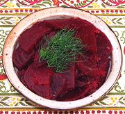

|
Beet SaladCzech | ||||
| Serves: Effort: Sched: DoAhead: |
6 salad ** 8 hrs Best |
A very fine beet salad. The pattern recipe was a bit deficient in details, so I used a similar German recipe for Beet Salad as a guide, and that worked well. | |||
|
2 ---- 3/4 3/4 1/4 2 2/3 1/2 ---- 1/4 |
# --- c c c t t t --- c |
Beets -- Dressing Cider Vinegar Water Horseradish (1) Sugar Fennel seeds Salt ---------- Oil (2) |
Make: - (40 min)
|